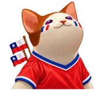
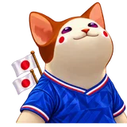
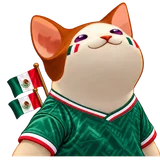
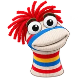
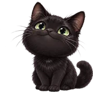

01 · EL PROBLEMA
Cada plataforma tiene su propio chat y sus propios límites. Las herramientas de TTS existentes son de pago, funcionan con una sola plataforma o no se integran bien con OBS.
CASO DE ESTUDIO · TIEMPO REAL
Quienes transmiten en varias plataformas a la vez no tenían una forma gratuita de que su audiencia “hablara” en el directo. Construí un servidor que une los chats, los lee con voces configurables y anima un avatar dentro de OBS.
Cada plataforma tiene su propio chat y sus propios límites. Las herramientas de TTS existentes son de pago, funcionan con una sola plataforma o no se integran bien con OBS.
Una cola compartida de hasta 100 mensajes que conserva la plataforma de origen, filtros de moderación, cambio de voz dentro del mensaje ({verity}) y un overlay que sincroniza la boca del avatar con el volumen.
safeStorage.



